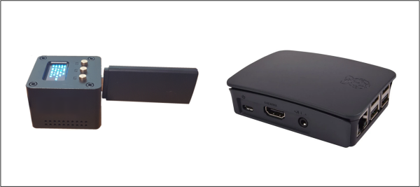
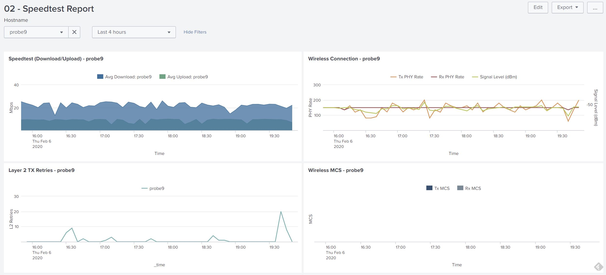

wiperf V2: An Open Source UX Performance Probe

Wiperf is a utility that can be installed on to a WLAN Pi or a Raspberry Pi to act as a network probe running a series of network performance tests. It is primarily intended to provide an indication of the end-user experience on a wireless network, but may also be used as a standalone ethernet-connected probe.
The probe can run the following tests to give an indication of the performance of the network environment into which it has been deployed:
- Wireless connection health check (if wireless connected)
- Speedtest (Ookla)
- iperf3 (TCP & UDP tests)
- ICMP ping
- HTTP
- DNS
- DHCP
Tests may be performed over the wireless or ethernet interface of the probe unit. The results must then be sent back to a Splunk or InfluxDB server (which we'll call the "data server") to provide a reporting capability. (NOTE: There is no graphing/reporting capability on the wiperf probe itself)
Wiperf has been primarily designed to be a tactical tool for engineers to deploy on to a wireless network where perhaps issues are being experienced and some longer term monitoring may be required. It is not designed to replace large-scale commercial offerings that provide wireless and end-user experience monitoring in a far more comprehensive and user-friendly fashion.

Tests are run on the wiperf probe at a configured interval (usually 5 minutes) and collected data is sent back to a data server over a network connection between the probe and data server (no connection = no data collection). The data server must be an instance of either:
- Splunk, or
- InfluxDB with Grafana
Data Server
The core focus of this project is the probe platform that gathers the network performance data in which we are interested. However, the data server is a critical component that allows visualization of that performance data. High-level configuration details will be provided to "get you going", but detailed information about the operation of these platforms is beyond the scope f this project.
Both of the data servers supported are "NoSQL" servers, which means that no data structures have to be pre-defined in database tables. This means we can send our data structures, that contain network performance data, to the server with very little set-up compared to traditional database servers.
As long as we have a valid set of credentials for the data server, we can just send a data in JSON data structures over HTTPS in whatever structure we choose. A database query language on the data server allows us to retrieve and graph the data collected by the wiperf probe.
Splunk
Splunk is supported on all popular operating systems and is very easy to set up on your server of choice. It acts as both the data store and visualization platform. Splunk is a commercial, rather than open-source, product.
The volume of data returned by the probe is very low, so the free tier of Splunk may be used to gather and report on data. For details on how to set up a Splunk server, visit this document: [Splunk build guide][splunk_build] (it's a lot easier than you might expect...honestly)
- Splunk product web site: https://www.splunk.com/
InfluxDB/Grafana
Grafana is a popular open-source data visualization tool. It is used to graph the performance data collected by wiperf. However, Grafana needs a data server from which to pull its network performance data. To meet this requirement, the Influx database server is used. Like Grafana, InfluxDB is also an open-source package.
For small-scale instances, Grafana & Influx may be installed on the same server platform and Grafana configured to use the local instance of Influx as its data source.
- Grafana web site (v6.7): https://grafana.com/
- Influx web site (v.1.8): https://www.influxdata.com
Workflow to Setup Wiperf
The workflow to get Wiperf fully operational consists if a number of steps that break down in to two main areas:
- Probe setup (the RPi or WLAN Pi)
- Data server setup (the Splunk or Influx/Grafana server)
The Data server setup tends to be a task that needs completion only once (or at least very infrequently). Conversely, some or all of the probe setup will need to be completed each time a probe is deployed - this is mainly due to the fact that in each environment in which it is deployed, the connectivity for the probe will vary (e.g. different SSID, different network connection type).
Here is an overview of the workflow::
- Data server setup:
- Prepare a server platform
- Obtain the data server application software
- Install the data server application
- Configure the data server application
- Probe setup:
- Obtain a probe platform (Raspberry Pi or WLAN Pi)
- Prepare the platform for the wiperf software
- Install the wiperf software
- Configure the wiperf software
- Deploy & test the wiperf probe
Links:
In addition to the setup and deployment of the components, there may also be a requirement to troubleshoot the setup. This may involve:
Further Documentation References

Credits
This project has had some great input from a number of people. Here are a few words of thanks to those who have bene so generous in helping out.
Thanks to Kristian Roberts for his invaluable project input, testing and guidance on Splunk. He kicked this whole thing off and it definitely wouldn't have happened without him. A top bloke.
Thanks also to Eric Garnel and James Whitehead for their invaluable help in providing me so many Grafana dashboard files to "borrow" from. It was a steep learning curve for me, but the generosity of Eric & James really helped me to get to grips with Grafana. Also thanks to Eric for providing the idea to use InfluxDB as a data source.
The code for the MOS score calculation was kindly provided by Mario Gingras. What a great idea...I wish I'd thought of that! Thanks Mario, it's great addition.
Caveats
This free software is provided for you to use at your own risk. There are no guarantees around its operation, suitability or the data that it provides. Please consult the [license file][license] shipped with this software.
Developer
Nigel Bowden (WifiNigel): https://twitter.com/wifinigel